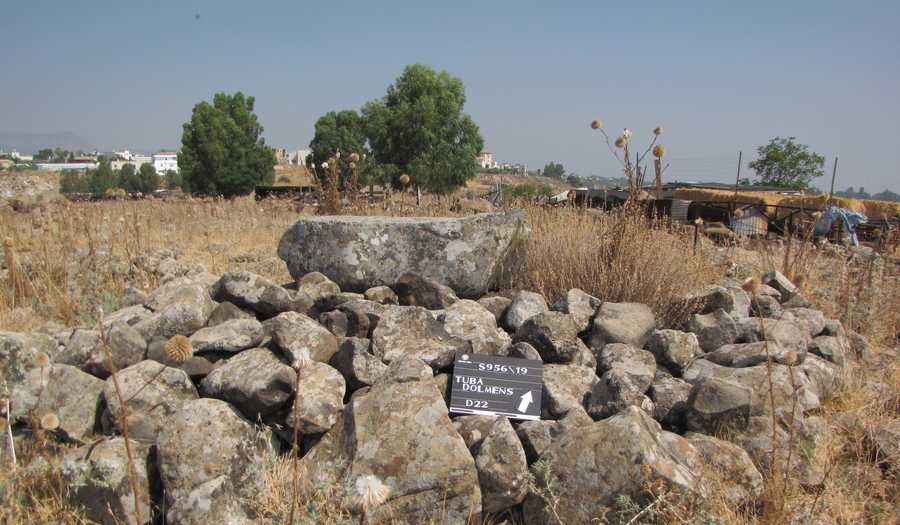

The Dual Tension
What is InSites
Epistemic Notation
From Report to Inquiry
Q&A
Why governance
Give it freedom — it fabricates.
Lock it down — it loses the synthesis we came for.
FREEDOM
Fluent claims no source supports
GUARDRAILS
The synthesis we came for is lost
Both share one cause — the reasoning path stays tacit.
Under which affordances — and which human oversight — can AI assess accountably?

One experimental answer, from one site — a dolmen field in northern Israel.